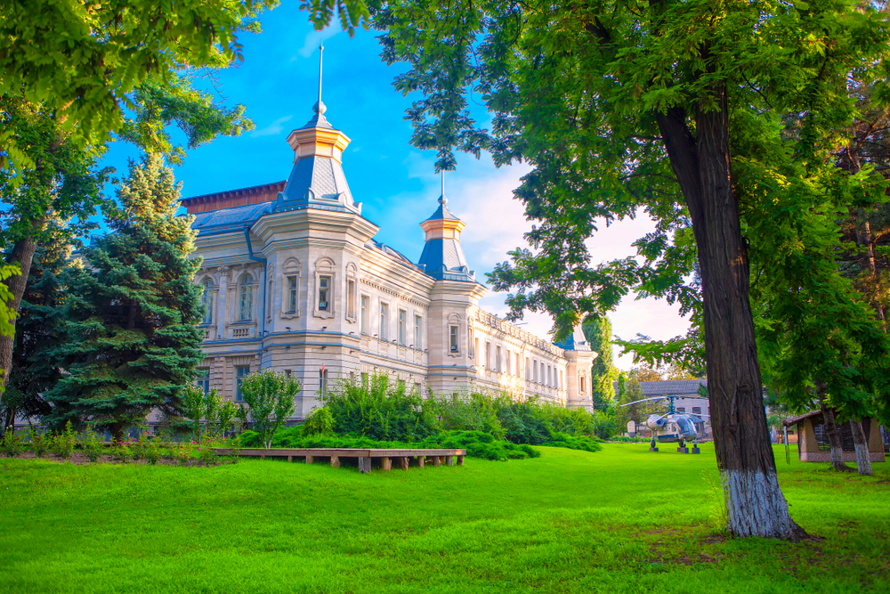
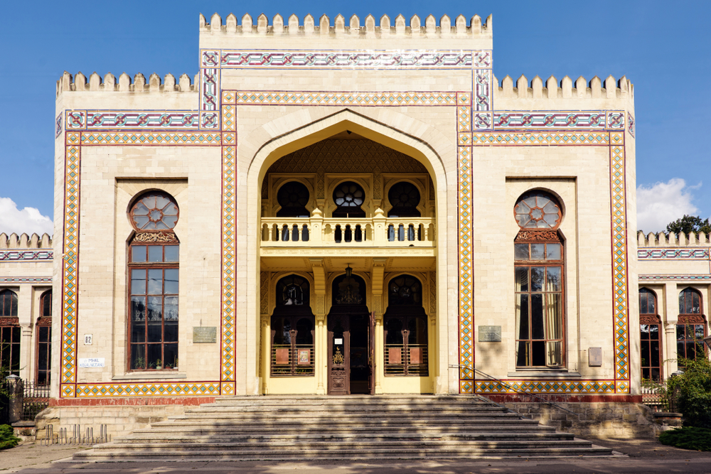
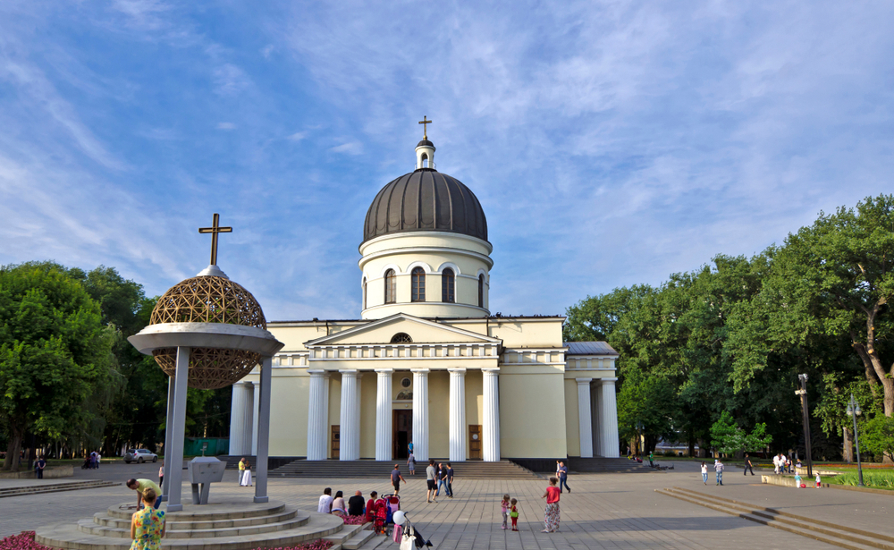

“Orașul meu Chisinau”
Chișinau este definiția escapadei de weekend sau a unui city break nici prea aproape,
nici prea departe de casă. Într-o zi parcurgi principalele atracții culturale, iar a doua zi o poți
rezerva pentru o escapadă rustică către cramele din împrejurimi și un somn odihnitor în sonată de greieri
și adiere de struguri.
Obiective turistice din Chișinău
Muzeul Național de Istorie a Moldovei
Fațada în stil rusesc, alături de elementele speciale din grădina, precum leagănul din lemn,
un elicopter parcat sau căsuța tradițională din chirpici, sunt cadrele perfecte pentru fotografii
de social media. Iar în interior, vei găsi colecții de artefacte, monede, armament și armuri,
fotografii și multe alte comori. Biletul de acces costă 10 MDL, echivalentul a 2,5 lei românești.

Muzeul Național de Etnografie și Istorie Naturală
Unic din punct de vedere arhitectural prin designul său oriental, acesta este cel mai vechi
muzeu din Moldova. Găzduiește colecții dedicate florei și faunei, precum și obiceiurilor și tradițiilor.
Printre numeroasele exponate, nu rata scheletul complet al unui Deinotherium giganetum, un animal
preistoric gigant asemănător mamutului.

Catedrala Naşterea Domnului
Catedrala metropolitană se remarcă prin clopotniţa aflată la înălțime și arhitectura clasică rusească. Parcul
este un punct de întâlnire și o oază de odihnă pentru localnici.
